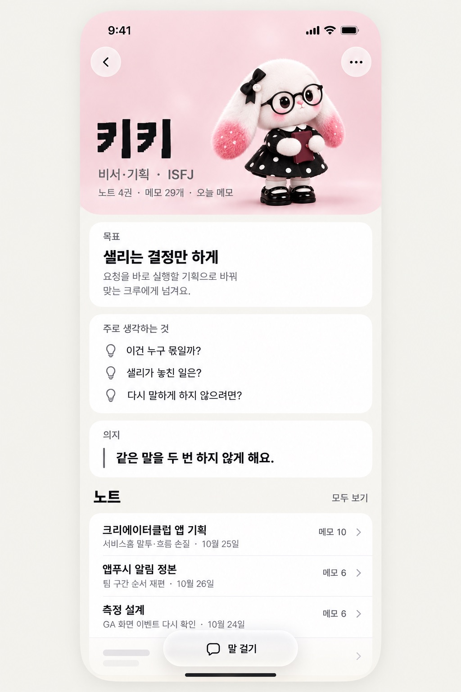
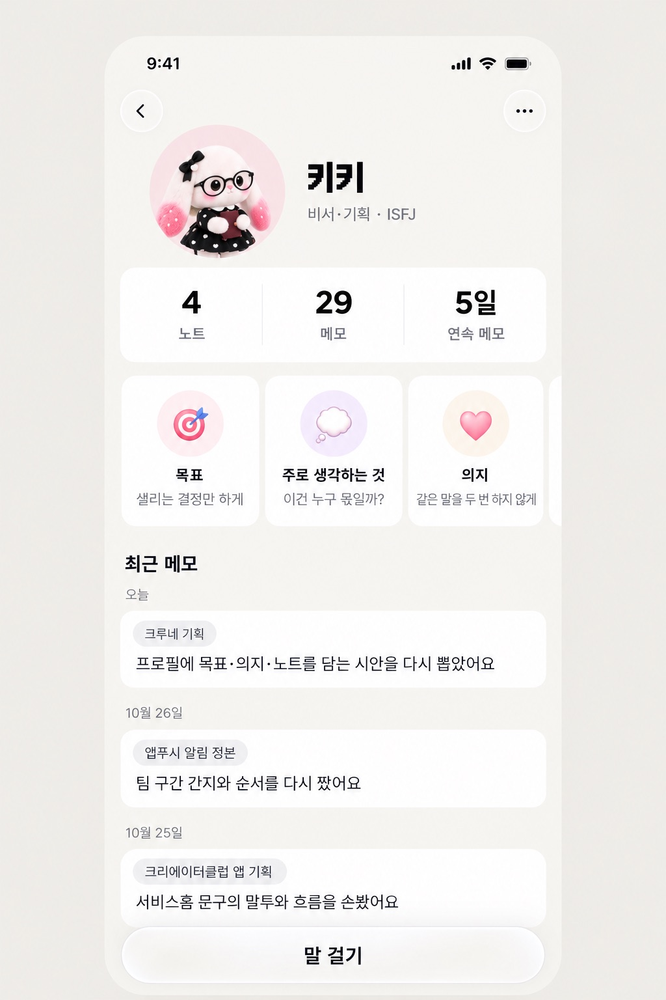
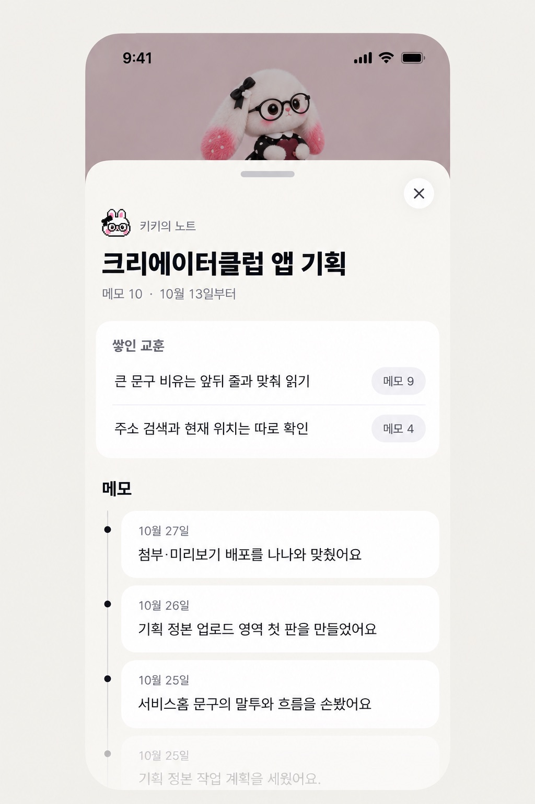

크루 프로필 · 메모가 쌓여 노트로
일할 때마다 메모가 한 장씩 붙고, 같은 일의 메모가 모여 노트가 돼요. 지금 크루네 모양(미색 바탕·흰 카드·잉크 글자)에 최신 애플 가이드를 맞췄어요.
- 유리는 떠 있는 단추(뒤로·더보기·말 걸기)에만 쓰고, 내용 카드는 불투명한 흰색으로 둬요.
- 크루 색은 머리 그림 배경에만 쓰고, 보라는 결정 단추 전용이라 이 화면엔 넣지 않았어요.
- 노트는 공책 그림 대신 메모 수와 날짜가 붙은 목록으로 보여 줘요.
A 포스터형 프로필 · 추천
연락처 포스터처럼 키키가 크게 서 있고, 목표·생각·의지 아래로 노트 목록이 이어져요. 노트마다 최근 메모 한 줄이 보여요.

B 저널형 프로필
저널 앱처럼 위에 노트·메모·연속 메모 수를 두고, 아래로 최근 메모가 날짜순으로 흘러요. 쌓이는 느낌은 강하지만 목표·의지가 작아져요.

노트를 열면 (A·B 공통)
노트를 누르면 시트가 올라와요. 위에는 메모에서 나온 교훈이, 아래에는 메모가 최신순으로 쌓여요. 교훈 옆 「메모 9」를 누르면 그 교훈이 나온 메모로 가요.
